누가 누굴 봉쇄한 것일까 - 나폴레옹과 영국 해군의 해상 봉쇄
게시: 2017-12-03T15:50:59+09:00
최근 미국이 북한에 대한 해상 봉쇄에 나서겠다고 선언했지요. 해상 봉쇄란 사실 '빨갱이를 때려잡자'라는 구호처럼 간단한 문제가 아닙니다. 가령 유니세프에서 북한 아기들을 위해서 보내주는 백신 등 의약품도 막을까요 ? 설마 그렇지는 않겠지요. 또는 태국이 북한으로 수출하는 쌀을 압류할까요 ? 그럼으로써 손해를 보는 태국 곡물 회사의 손해는 누가 보상해주나요 ? 쌀은 식량이니까 봐준다고 쳐도, 가령 몰리브덴(molybdenum)은 어떤가요 ? 이건 대륙간 탄도탄의 탄두 부분(nose cone)에 꼭 필요한 합금 재료이기도 하지만, 공구강 등 일반 산업용으로도 많이 쓰이는 금속입니다. 페루에서 북한에 수출하는 이 금속 자원을 미해군이 마음대로 몰수할 국제법적 근거가 있을까요 ? 이것이 해적 행위와 무엇이 다른가요 ? 또 그 몰리브덴을 싣고 가는 선박이 러시아 선박이라면 러시아가 가만히 있을까요 ?
미국과 북한의 대결보다는 훨씬 스케일이 컸던 실제 사례가 있지요. 바로 나폴레옹과 영국 해군의 대결입니다. 그를 통해서 해상 봉쇄란 무엇이고 국제법적인 근거가 무엇인지, 그 실행에는 어떤 문제가 있으며 과연 그 성공 가능성은 어떤지 살펴보시지요.
(2014년에 썼던 글의 재탕입니다.)
---------------------------
나폴레옹은 1806년 10월 예나-아우어슈테트에서 대승을 거둔 뒤 보무도 당당하게 포츠담과 베를린에 입성합니다. 이때 포츠담에 있는 프리드리히 대왕의 묘소에서 나폴레옹은 대왕의 모자와 검, 허리띠 등을 파리 앵밸리드로 보냈는데, 이때 프랑스로 보낸 것은 이뿐 만이 아니었습니다. 실은 나폴레옹은 개인적으로 프리드리히 대왕의 은제 자명종 탁상 시계도 개인적인 차원에서 슬쩍 했고, 이 시계는 결국 세인트 헬레나의 나폴레옹 침실까지 따라가게 되지요. 나폴레옹이 프로이센을 무찌른 뒤 얻은 전리품 중에는 이런 은시계 말고도 수천 마리의 군마와 600문이 넘는 대포, 많은 현금 궤짝 및 식량 등 다양했습니다. 하지만 가장 인상적인 전리품은 라이프치히(Leipzig)에서 얻을 수 있었습니다.
라이프치히는 작센 (Saxony)의 수도로서, 중부 독일의 대도시였고, 당연히 상업의 중심지였습니다. 이곳의 물류 창고에서, 프랑스 군은 면직물 등 다량의 영국제 상품을 발견하고 이를 압류합니다. 이렇게 압류한 상품은 현장에서 현지 상인들에게 경매에 붙이는 것이 일반적이었습니다. 군사 작전에도 바빠 죽겠는데 그런 상품의 수송 및 판매처 확보 등을 할 수는 없었고, 현장에서 처분한 뒤 그 댓가로 받은 금화/은화를 가져가는 것이 더 효율적이었으니까요. 그런데, 이 상품의 양이 어찌나 많았는지, 헐값에 경매에 붙였는데도 그 수익이 무려 6천만 프랑 (현재 가치로 대략 8천4백억 원 가량)이나 되었습니다. 아우스테를리츠에서 격파한 오스트리아에게 부과된 전쟁 배상금의 금액이 4천만 프랑이었던 것을 생각하면 정말 엄청난 거액이었습니다. 영국제 면직물의 양이 너무나 많았으므로, 나폴레옹은 이를 다 팔지 않고 그 중 일부로 자신의 그랑 다르메 (La Grande Armee) 전체의 군복을 새로 만들게 할 정도였습니다. 굳이 라이프치히에서의 이 사건이 아니었어도, 나폴레옹은 이미 영국 상공업의 위력에 대해서 잘 알고 있었습니다. 그는 표면적으로는 '영국은 가게 주인들 (shopkeeper)의 나라' 라고 부르며 하찮다는 듯이 표현했지만, 사실은 그 위력에 대해 전율하고 있었고 또 부러워 하고 있었습니다.
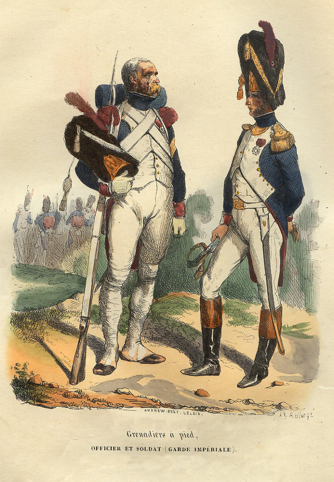
(나폴레옹의 근위 척탄병의 군복 모습입니다. 다음 편에 보시겠습니다만, 정말 나폴레옹의 병사들 상당수가 영국제 천으로 만들어진 군복을 입고 있었습니다. 상당히 아이러니컬한 일이지요.)
우리나라를 포함한 현대 국가들의 정치판도 그렇고, 제1차 및 제2차 세계대전도 그렇습니다만, 모든 싸움판의 원인은 무슨 고귀한 정의감이나 감정적인 자존심이 아니라 바로 돈입니다. 가령 미국이 대량 살상무기가 없다고 주장하는 이라크에는 쳐들어가도, 보란 듯이 핵 실험을 빵빵 터뜨리며 시끄럽게 울어대는 북한은 애써 무시하는 일이나, 리비아의 내란에는 즉각 개입하면서도 시리아의 내전에는 벌써 몇년 째 손을 놓고 있는 것도 다 돈 냄새가 나느냐 안 나느냐에 따른 것이지요. 나폴레옹 전쟁 자체도 마찬가지입니다. 일단 프랑스 대혁명 자체가 누가 세금을 더 내야 하느냐라는 문제 때문에 발생한 것입니다. 그리고 나폴레옹의 영원한 숙적 영국이 프랑스와 그 전부터 백년 가까이 전쟁 상태에 있었던 것도 바로 돈 때문이었습니다. 두 나라가 전쟁을 할 때는 단지 상대방이 마음에 안든다고 하는 것이 아닙니다. 그것이 사실이라면 일본과 한국은 이미 전쟁을 해도 수십번은 했을 것이고, 북한과 한국도 결딴이 날 때까지 죽어라 전쟁을 했겠지요. 우리나라가 개념상실 망언왕국 일본이나 세습독재 지상낙원 북한과 전쟁을 하지 않는 이유는 바로 돈이 되지 않기 때문입니다.
(북한은 그렇다치고, 시리아 내전처럼 당장 무고한 사람들이 마구 죽어나가는 상황을 국제 사회가 그저 구경만 하고 있는 모습을 보면, 도덕성이니 기독교 정신이니 알라신이니 정의니 하는 것들은 정말 립 서비스에 불과한 것이 확실합니다.)
흔히 프랑스 대혁명 이후 부르봉 왕가를 복위시키기 위해 영국이 즉각 대불 동맹전쟁에 뛰어 들었다고들 생각하기 쉽습니다. 하지만 대혁명 초기 영국은 팔짱을 끼고 사태를 지켜보고 있었을 뿐이었습니다. 영국은 1792년 초반 오스트리아와 프로이센이 연합하여 프랑스와 전쟁을 벌일 때도 그야말로 강건너 불구경하는 입장이었고, 1792년 9월 루이 14세가 폐위되었을 때도 잠자코 있었으며, 심지어 왕정국가로서 참기 어려운 사태였던 1793년 1월의 루이 16세의 처형 때도 가만히 있었습니다. 영국과 프랑스 사이에 전쟁이 선포된 것은 1793년 2월 들어서였는데, 그것도 영국이 선포한 것이 아니라 프랑스가 선포한 것이었습니다. 왜 그랬을까요 ?
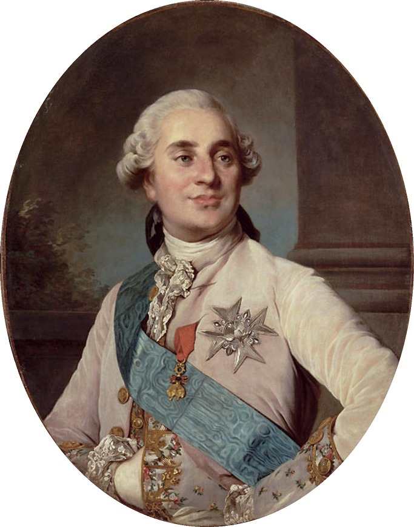
(이 분이 루이 16세입니다. 1775년에 그려진 그림이니, 21세 때의 모습이네요. 참고로 아래 나오는 베르겐 백작은 이 루이 16세가 가장 신임하는 장관이었습니다.)
이야기는 1786년에 맺어진 에덴 조약 (Eden Treaty)로 거슬러 올라갑니다. 그 이전까지 영국과 프랑스를 포함한 모든 유럽 국가들의 경제 개념은 상당히 원시적이라서, 무조건 수출은 좋은 것이고 수입은 해로운 것이다 라는 것이었습니다. 그러다보니, 영국이나 프랑스나 서로 상대국가의 수입 물품에 대해서는 높은 관세를 매겨 사실상 수입을 봉쇄하고 있었습니다. 1678년에, 영국에서는 아예 법으로 모든 프랑스 산 물품, 즉 와인, 식초, 브랜디, 아마포, 비단, 소금, 종이 뿐만 아니라, 프랑스 산 비단이나 실, 가죽 등의 재료가 들어간 모든 공산품까지도 수입을 금지시켰습니다. 프랑스 상품과의 경쟁으로 손해를 보고 있던 영국 상인 및 제조업자들의 입김이 강했기 때문이지요. 심지어 전쟁 중 정당하게 노획된 물품이라고 할 지라도, 절대 영국 내로 들여오거나 재판매를 할 수 없도록 하고 현장에서 즉각 불태워버리거나, 와인이나 브랜디의 경우 바다나 강에 쏟아버리도록 명령이 내려질 정도였습니다. (물론 병사들이나 수병들은 와인과 브랜디를 자기 입 속에 쏟아버렸겠지요.) 이런 수입 억제 정책은 프랑스 측도 마찬가지였습니다.
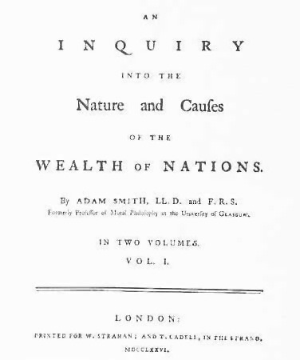
(세계 경제사에 우뚝 서는 고전 중의 고전, 아담 스미스의 국부론입니다. 저도 이거 읽어봐야 하는데... 가만 보면 은퇴 뒤에도 정말 할 일은 많은 것 같아요. 돈이 안되어서 문제지요.)
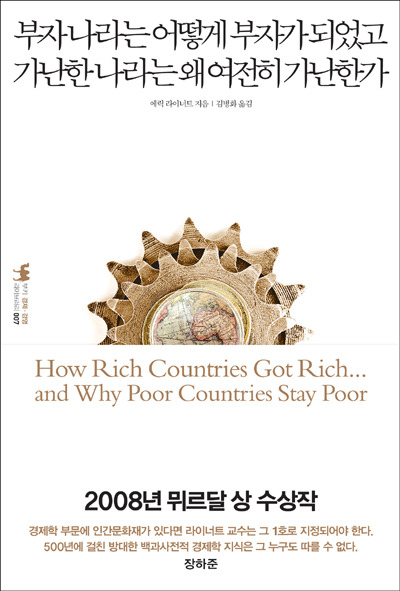
(물론 아담 스미스의 국부론에 반기를 드는 경제학 서적도 있습니다. 이거 집에 사놓기만 하고 아직 몇 페이지 못 읽어보았습니다. 제가 보니까... 경제학자들은 문장을 일부러 어렵게 써야 한다는 강박 관념에 시달리는 모양이에요. 제가 이해력이 딸리는 건가요 ?)
그러다 1783년 끝난 미국 독립 전쟁에서 영국을 물먹이느라 재정을 탕진한 프랑스가 당장 농산물을 수출해야 하는 필요성과, 북미 식민지를 상실하는 바람에 자국산 공산품을 위한 새 수출 시장을 급히 찾아야 하는 영국의 이해가 맞아 떨어지면서 1786년 이 두 국가 사이에 관세를 대폭 낮추자는 에덴 조약 (Eden Treaty)이 맺어지게 됩니다. 이때 프랑스 측의 책임자는 중농주의자였던 베르겐 백작 (Charles Gravier, comte de Vergennes)이었고, 영국측 책임자는 아담 스미스의 국부론(Wealth of Nations, 1776년 출간)에 잔뜩 영향을 받은 오클랜드 남작 에덴 (William Eden, 1st Baron Auckland)이었기 때문에, 상대적으로 영국산 공산품의 프랑스 시장에 대한 진입 장벽이 크게 낮아지게 되었습니다. 역사가들은 이 에덴 조약으로 인해 손해를 보게 된 프랑스의 대형 제조업자 및 상인들, 즉 부르조아 시민계급의 불만이 프랑스 대혁명의 한 원인이 되었다고도 보고 있습니다.
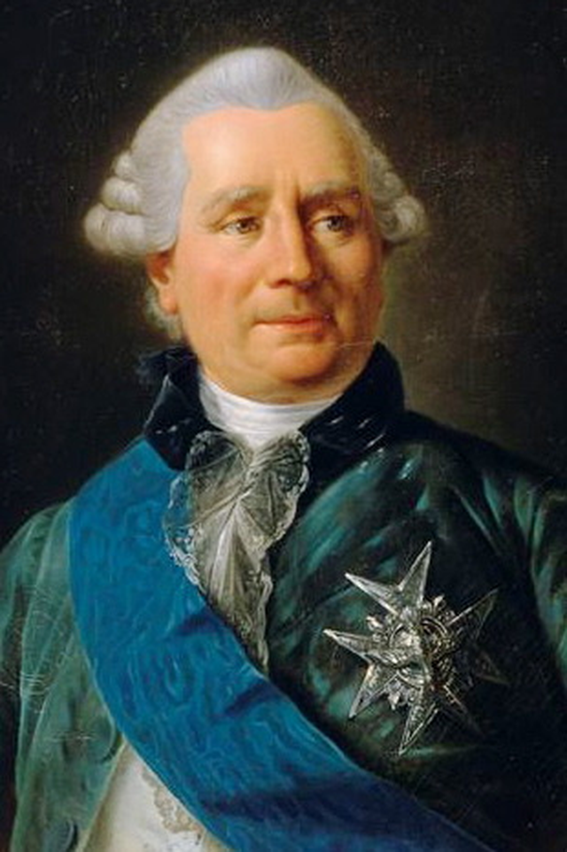
(에덴 조약의 주연인 프랑스 베르겐 백작입니다. 루이 16세의 충신이었던 그는 자신이 프랑스 대혁명의 씨앗을 심었다는 것을 이해했을런지 잘 모르겠습니다. 그는 혁명 발발 2년 전인 1787년, 70세의 나이에 과로가 원인이 되어 병사했습니다.)
아무튼 이렇게 영국은 혁명이 벌어진 이후에도 프랑스 시장에 자국산 공산품을 신나게 팔아대고 있었으므로, 프랑스 왕의 목이 잘리건 말건 프랑스와 굳이 전쟁을 해서 이 커다란 시장을 잃을 이유가 전혀 없었습니다. 그러나 프랑스 대혁명의 주역이었던 중산층 시민 계급은 주로 상공업에 종사하고 있었으므로, 이들에게는 자신들의 이익을 갉아먹는 값싼 영국 제품이 눈엣가시였습니다. 결국 이들은 영국과의 전쟁을 통해 영국 제품의 수입 금지를 택하게 되었던 것입니다. 그것이 프랑스 대혁명에 영국이 참전하게 된 이유였습니다. 프랑스 측으로서는 영국 공산품을 막아내야 했고, 영국 측으로서는 거대한 프랑스 시장을 뚫어야 했던 것이지요. 부르봉 왕가의 복위 따위 같은 것은 부차적인 문제에 불과했습니다.
(이 그림은 1783년에 그려진 루이 16세의 왕비, 마리 앙투와네트의 초상입니다. 이 그림이 특히 유명한 것은 앙투와네트가 입고 있는 저 드레스 때문입니다. 저건 영국제 모슬린 (mulsin) 천으로 만들어진 것이거든요. 당시 프랑스는 비단 산업이 발달했지만, 목화솜으로 만든 모슬린 옷감이 유럽 상류층에 대유행하고 있었습니다. 제가 전에 쓴 글에서도 나폴레옹이 1803년 6월 영국 타도를 위해 조성된 불로뉴 캠프에 시찰을 가는데 동행하는 조세핀이 개념도 없이 모슬린 드레스를 입고 가겠다고 부득부득 우기는 바람에 대판 부부 싸움이 벌어진 에피소드를 적은 적이 있었지요.)
자, 전쟁이 시작되었으니 당연히 영국과 프랑스의 화물선들이 서로의 항구로 자국 상품을 실어나르는 상업 활동은 당연히 중단되었을 것입니다. 그렇다면 이제 영국산 물품은 프랑스로 전혀 못 들어오고, 또 프랑스 산 물품은 영국에서 구경할 수 없게 된 것일까요 ? 물론 전혀 그렇지 않았습니다. 프랑스에서는 적은 물량이나마 인도산 목화솜이 계속 들어오고 있었고, 영국에서도 프랑스 산 브랜디를 (매우 높아진 가격으로) 어렵게나마 계속 구할 수 있었습니다. 어찌된 일일까요 ? 바로 중립국 덕분이지요. 가령 프랑스는 포르투갈을 통해 영국 화물선이 실어오는 목화솜을 조금씩 (훨씬 더 비싼 가격에) 수입할 수 있었습니다. 그리고 프랑스 산 브랜디도, 중립국인 독일 북부 한자 (Hansa) 동맹 자유 도시들, 가령 브레멘 (Bremen)이나 함부르크 (Hamburg)로 먼저 수출되었다가 거기서 많은 이윤을 붙여 다시 영국으로 수출되었습니다. 이래서야 양국 사이의 전쟁은 중립국들만 신나는 일이 되어 버리게 됩니다.
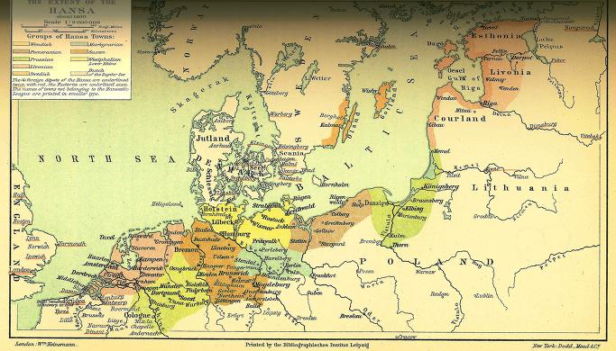
(한자 동맹의 전성기를 표시하는 지도입니다. 한자 동맹은 13세기부터 시작되어 14세기 말에 절정에 달했지만, 그 잔재는 18세기 후반까지도 남아 있었습니다.)
실제로도 그랬습니다. 원래 유럽으로 반입되는 설탕이나 커피의 40%는 프랑스령 생 도밍그 (Saint Domingue)에서 오는 것일 정도로, 프랑스는 생 도밍그로부터 엄청난 부를 거둘 수 있었습니다. 그러다가 혁명이 나고, 노예 반란이 일어나고 (검은 나폴레옹 vs. 하얀 나폴레옹 http://blog.daum.net/nasica/6862510 참고), 제1차 동맹 전쟁이 벌어지는 바람에 영국 해군이 프랑스 선박의 씨를 말려 버렸지만, 생 도밍그의 설탕과 커피는 계속 한자 항구들로 들어올 수 있었습니다. 바로 미국 화물선들 덕분이었지요. 미국 선박들이 때를 만난 메뚜기처럼 미국과 생 도밍그, 발트 해를 오가면서 설탕과 커피, 유럽의 공산품을 실어날랐습니다. 아미앵 조약에 의해 1802년~1803년의 짧은 기간 동안 프랑스 선박들이 다시 생 도밍그에 나타나게 되자, 미국의 설탕 무역액은 재앙을 만난 듯 주저 앉았습니다만, 제3차 동맹 전쟁이 벌어지자 미국 해운업은 다시 전성기를 맞이했습니다. 영국 해군으로서는 봉쇄 활동을 펴느라 죽도록 고생만 하고, 그 달콤한 결실을 미국이 다 가져가는 모양을 지켜 볼 수 밖에 없었습니다. 그 결과로 나타난 것이 결국 미국과 영국의 전쟁이었지요. 흔히 1812년 영미 전쟁의 원인이 영국 해군에게 체포되는 영국 해군 탈주병 출신 미국 선원들에 대한 납치였다고 하지만, 실제로는 그런 인권과 국가 위신에 대한 문제가 아니라 바로 돈 때문이었던 것입니다.
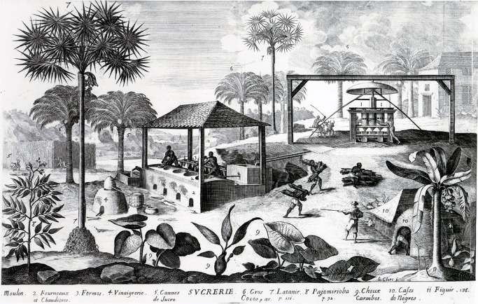
(물론 미국이 생 도밍그의 설탕과 커피 수출을 도맡으며 희희낙낙할 수 있었던 것은 생 도밍그의 반란 노예들이 계속 사탕수수 농장에서 고생을 했기 때문이었습니다.)
여기서 잠깐, 전쟁이 난 마당에 중립국이고 나발이고 영국 해군은 모든 선박이 적국인 프랑스 항구로 들어가는 것을 막을 수 있는 것 아니냐고요 ? 여기서 국제 상식 퀴즈 하나 내드리겠습니다. 가령 우리나라와 일본이 전쟁에 돌입했다고 치지요. 그런 상황에서 프랑스 유조선 한척이 원유를 가득 싣고 인천항에 입항하려 합니다. 이때 일본 해자대의 구축함이 이 유조선에게 뭘 어쩔 수 있을까요 ? 일본이 프랑스와의 관계를 생각하여 감히 그 유조선을 건드리지 못하게 되는 것일까요 ? 원유는 확실히 군수 물자와 상관있으니 그렇다치고, 더 어려운 문제 하나 내보겠습니다. 이번에는 입항이 아니라 출항입니다. 중국 화물선 한 척이 한국산 스마트폰을 잔뜩 싣고 부산항을 출발하여 상해로 가려고 합니다. 그리고 그 스마트폰 대금은 이미 HSBC 은행 싱가폴 지점을 통해 한국 기업에 송금한 상태라서, 그 화물 소유권이 이미 중국 기업에 있다고 해보십시요. 일본이 그 화물선을 막아설 권리가 있는 것일까요 ? 이야기는 더 복잡해질 수 있습니다. 가령 한국 해군 잠수함이, 오사카 항에 입항하려는 일본 민간 유조선을 격침하는 것이 옳은 일일까요 ? 만약 이렇게 민간인 화물선을 격침시키는 것이 옳은 일이라면, 인천 공항에서 이륙하는 대한항공 여객기를 일본 공자대 전투기가 격추하는 것도 옳은 일인가요 ? 저 여객기 안에 미국으로 피난가는 여자와 아이들이 타고 있는지, 일본에 침투하려는 완전무장한 특수부대 1개 중대가 타고 있는지는 어떻게 알 수 있나요 ?
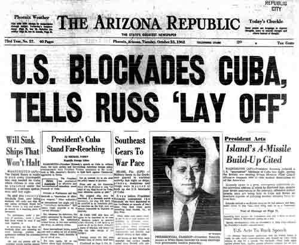
(그런 해상 봉쇄 문제에 있어서 가장 좋은 예는 케네디 대통령 시절 쿠바의 미사일 위기 때의 미소 대치 상황이었습니다.)
그냥 결론부터 말씀드리자면, '그때그때 달라요' 입니다. 사실은 '정답은 없다'가 더 정확한 답이 되겠습니다. 놀랍게도, 이런 전시 해상 봉쇄에 대해 규정된 국제법 같은 것이 없습니다. 따지고 보면 당연한 것이, 법이라는 것은 위반할 경우 처벌을 가할 수 있어야 의미가 있는 것인데, 국가를 처벌할 기관이 없으니까 국제법이라는 개념 자체가 사실 잘못된 것입니다. 국제 협약 정도가 맞는 이야기지요. 이런 해상 봉쇄에 대해서는 진지하게 논의된 국가간의 협약 같은 것조차 없습니다. 그것도 생각해보면 당연한 것이, 전쟁이 발발할 경우 적국을 해상 봉쇄할 정도로 해군력에 대해 자신 있는 나라가 1~2개국 정도 밖에 없고, 나머지는 모두 '해상 봉쇄는 모두 불법'이라고 주장할 것이 뻔하기 때문에, 제대로 된 합의 같은 것이 있을 리 없지요.
18세기 말 19세기 초의 유럽 해상의 상황이 딱 저랬습니다. 당시 제해권은 영국 해군이 완전히 장악하고 있었으므로, 각국의 주장은 간단 명료했습니다. "Free ships make free goods." 즉, 중립국 선박이 실어나르는 물자에 대해서는 전쟁 당사국 어느 쪽도 훼방을 놓아서는 안된다 라는 것이 당시 중립국들의 주장이었습니다. 하지만 영국의 입장은 당연히 달랐습니다. 영국 해군은 중립국 선박이라 할지라도 영국 해군이 검색을 해서 금수 물품 (contraband)을 싣고 있을 경우 그 선박을 나포할 수 있다는 것이었지요. 이렇게 나포된 선박은 정당한 나포물 (prize)가 되어 그 나포 주체인 영국 해군 함정 또는 사략선 (privateer)이 매각 처분할 권리를 가지게 되었습니다. 하지만 이야기는 파고 들면 들 수록 더더욱 복잡해졌습니다. 가령 엄연한 금수 물자인 흑색화약 100톤을 싣고 가는 스웨덴 선박을 만났다고 하더라도, 만난 곳이 프랑스 해안에서 30 해리 이상 떨어진 공해상이라면, 이 선박을 나포하는 것이 정당한지가 문제가 됩니다. 당시 영해라는 개념은 해안선에서 3해리 (5.6km) 까지를 인정해 주었는데, 이 3해리 영해까지 들어오기 전에는 나포를 할 수 없다면, 사실상 나포할 확률이 크게 떨어졌습니다. 대부분의 항구는 거대한 해안포가 지키고 있었으므로, 특히 1해리 안에 들어가게 되면 더 이상 추격이 불가능했습니다. 그러므로 영국 해군은 공해상에서라도 중립국 선박을 얼마든지 검색할 권리가 있다고 주장했고, 또 실제로 그렇게 실력 행사를 했습니다. 당연히 중립국들은 강력하게 반발했습니다. 이건 아무런 법적, 도덕적 근거가 없는 해적 행위가 다름없다는 것이었지요.
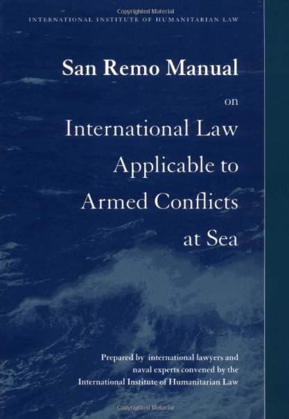
(산 레모 매뉴얼입니다. 아마존에서 이것도 판매하네요 ??)
자, 다시 여기서 한일 간의 가상 전쟁 상태로 되돌아가 보지요. 아까 정답이 '그때그때 달라요'라고 말씀드렸습니다만, 일본이 부산항에 입항하려는 프랑스 유조선을 나포하거나, 최소한 되돌려보낼 권리를 가지기 위해서는 일정 조건이 갖추어져야 했습니다. 바로 '봉쇄 선언'이었지요. 이 봉쇄 선언의 조건이라는 것도 무슨 법적 규정이 있는 것은 아니고, 그냥 수백 년간 이어져 내려온 관습법 같은 것에 불과합니다. 이런 조건을 그나마 서류상에 적어 놓은 것이 산 레모 매뉴얼 (San Remo Manual)이라는 것입니다. 이는 그냥 국제 인권 기구 (International Institute of Humanitarian Law)에서 주관한 몇 차례의 회의 (1988년~1994년)에 국제 법률 및 해군 관계자들이 모여 그동안의 해상 관습법을 정리한 권고안에 불과합니다. 아무런 법적 강제성이 없습니다. 아무튼 이에 따르면, 정당한 해상 봉쇄가 되려면 몇가지 조건을 갖추어야 했습니다. 가령 어떤 항구가 봉쇄 구역인지, 또 어떤 물자가 금수품 (contraband)인지 명확히 선포해야 했습니다. 그리고 여기서 중요한 한가지 조건이 덧붙여집니다. 바로 봉쇄 구역을 실질적으로 봉쇄할 능력이 있어야만 그 봉쇄 선언이 유효하다는 것입니다. 이는 해상 봉쇄 (blockade)라는 것은 육상에서의 포위 (siege)의 연장 개념으로 인식되었기 때문입니다. 가령 제1차 세계 대전 때 해군력이 미약했던 독일이 미국 뉴욕 항구를 '봉쇄 지역'으로 선포하고 중립국들의 입출항을 금지한다고 선언하는 것이 합법적이라면, 모든 전쟁 당사국이 적국이나 중립국의 모든 항구를 다 봉쇄 지역으로 선포할테니, 합법적인 봉쇄와 비합법적 봉쇄의 구분 의미가 없어지는 것이 될테니까요. 그러니, 만약 일본이 한국의 주요 항구를 모조리 봉쇄한다고 선언하려면 그 주요 항구 앞바다마다 최소한 1척 이상씩의 군함을 항상 배치해 놓아야 합니다. 따라서 실질적으로는 수많은 작은 포구까지 다 봉쇄 지역이 될 수는 없고, 인천항이나 부산항, 울산항 등과 같이 상당한 규모의 항구만을 봉쇄 지역으로 선포할 수 있는 것이 상식입니다. 요즘처럼 수상 함정이 공중 공격에 취약한 상태에서는 그렇게 24시간 적국 앞바다에서 봉쇄 활동을 펼칠 수는 없으므로, 해상 봉쇄라는 것은 현실적으로 더욱 어려운 일이 되었습니다.
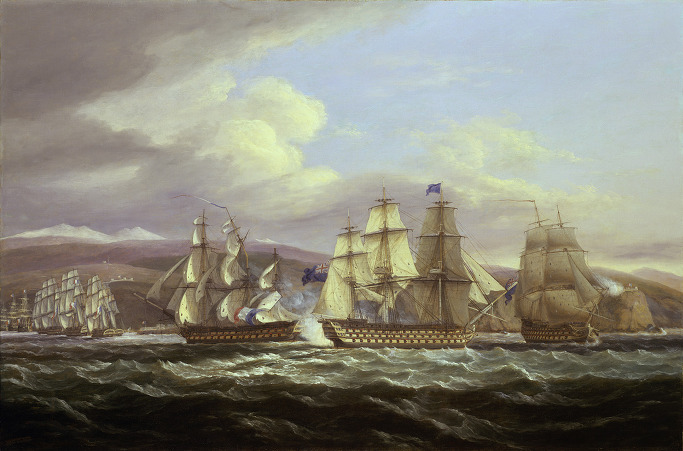
(이건 1810~1814년 기간 중 프랑스 지중해의 툴롱 항구를 봉쇄 중인 영국 해군의 모습입니다. 이 정도는 되어야 실제로 봉쇄 선언을 합법적으로 할 수 있는 것이지요.)
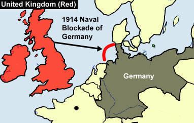
(제1차 세계 대전 중 영국이 선언한 독일에 대한 해상 봉쇄 구역입니다. 의외로 그리 넓지도 않고, 또 발트 해의 좁은 입구라는 지리적 특성 때문에 사실 넓을 필요도 없었지요.)
다시 18세기 말, 제1차 대불 동맹전쟁 시절로 되돌아가보지요. 당시도 합법적인 봉쇄가 되기 위해서는 이런 조건이 갖추어져야 한다는 것이 국제 해상 관습상의 상식이었습니다. 영국도 중립국 선박들이 프랑스와 해상 무역을 계속 하는 것을 막기 위해서는 봉쇄 선언을 해야만 했는데, 대범한 영국 정부는 '모든 프랑스 해안선을 봉쇄한다'라는 막무가내 선언을 해버렸습니다. 모든 해안선이 봉쇄 상태이므로, 어느 항구이건 프랑스로 가는 모든 중립국 선박들을 얼마든지 검색할 권리를 가진다는 것이지요. 이런 '전 해안 봉쇄'라는 것은 상식적으로 아무리 영국 해군이 제해권을 가지고 있다고 해도, 이는 실질적으로 불가능한 봉쇄였습니다. 영국이라고 군함이 수만 척 있는 것은 아니었으니까요. 따라서 중립국들은 이건 실질적이 아닌 '서류상의 봉쇄' (paper blockade)에 불과한 것이며 이 봉쇄 선언 자체가 비합법적인 것이라며 또 다시 강력하게 반발했습니다.
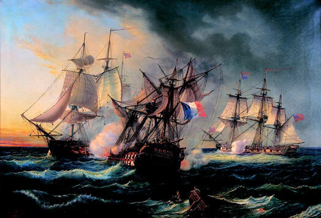
(영국이 선언한 '서류상의 봉쇄' 조치는 영국 해군 함장들에게 크게 환영되었습니다. 저 위의 툴롱 항구 경우처럼 정말 실질적인 봉쇄를 펼칠 경우 뭔가 나포물을 건질 확률이 0에 수렴하는 것에 비해, 서류상의 봉쇄는 많은 적국 선박 또는 중립국 선박들로 하여금 '봉쇄를 뚫고 갈 수도 있겠다'라는 희망을 주었으므로 나포물을 건질 확률이 높아졌기 때문입니다. 저 그림은 1797년, 프랑스 해안가에서 프랑스 전함 Droits de l'Homme (인권) 호를 추격 끝에 좌초시키는 영국 프리깃 함 HMS Amazon과 HMS Indefatigable의 모습입니다. C.S. Forester의 소설 시리즈 Hornblower의 주인공인 혼블로워는 저때 펠류 함장 밑에서 저 인디퍼티거블 호에 타고 있었다고 나옵니다.)
그런데, 여기서 잠깐, 영국은 분명히 프랑스에 물건을 수출해야만 하는 입장이었다는 점을 기억하십시요. 따라서 영국제 상품을 싣고 프랑스로 들어가는 중립국 선박을 막아야 하는 것은 영국 해군의 역할이 아니라 프랑스 해군이 해야 하는 것 아니었나요 ? 맞습니다. 더군다나, 당시 경제 관념으로는 원료를 수입 가공한 뒤 되팔면 국제 무역 수지가 흑자여서 좋은 것이었으므로, 영국 식민지에서 프랑스로 들여오는 목화솜 같은 원자재에 대한 수입은, 프랑스 측의 승리이자 영국 해군의 패배로 받아 들여졌습니다. 따라서, 프랑스로서는 비록 제해권이 없다고 하더라도 그저 육지 및 연안의 세관원들을 동원하여 영국제 물품에 대한 단속만 수행하면 되는 것이었습니다. 실제로 프랑스 혁명 초기에, 모든 영국제 상품들은 금지 품목으로 정해졌습니다. 이에 따라 프랑스를 출입하는 모든 중립국 선박들은 프랑스에 영해에 들어오면 프랑스 세관선에게 철저한 검색을 받아야 했습니다. 이때의 조건이 얼마나 까다로왔냐 하면, 그 큰 배 안에서 약간이라도 영국제 상품이 발견되기만 하면 화물 뿐만 아니라 선박 전체를 몰수해버리는 조치를 취했습니다. 그런데 이미 당시 영국은 산업 혁명을 시작한 공업 대국이어서, 선박 내에 잡기류나 선원들의 옷가지 중에라도 영국제 물건이 100% 없다는 것은 말이 안될 정도였습니다. 프랑스 혁명 초기의 광기와 부정부패로 인해, 이런 조항들이 악용되어 부당하게 선박과 화물을 몰수당한 중립국 선장들이 많았습니다. 가령 어떤 선장은 자기가 입고 있던 옷의 금속제 단추가 영국제라는 이유로 배를 빼앗겼고, 심지어 어떤 배의 선장은 프랑스 세관원에게 매수당한 선원 하나가 '방금 프랑스 세관원들이 오기 전에 선장이 영국제 장화 한켤레를 몰래 바다에 버렸다'라고 거짓 증언하는 바람에 배를 빼앗겼습니다. 일이 이렇게 되자, 중립국 선박들은 아무도 프랑스 근해로 올 생각을 하지 않게 되었고, 이런 상황은 프랑스 총재까지 그대로 이어졌습니다. 프랑스 혁명 당시 프랑스가 대외 무역으로부터 완전히 단절된 것은 영국 해군보다는, 오히려 해적떼에 가까운 프랑스 세관원의 역할이 더 컸다고 합니다.
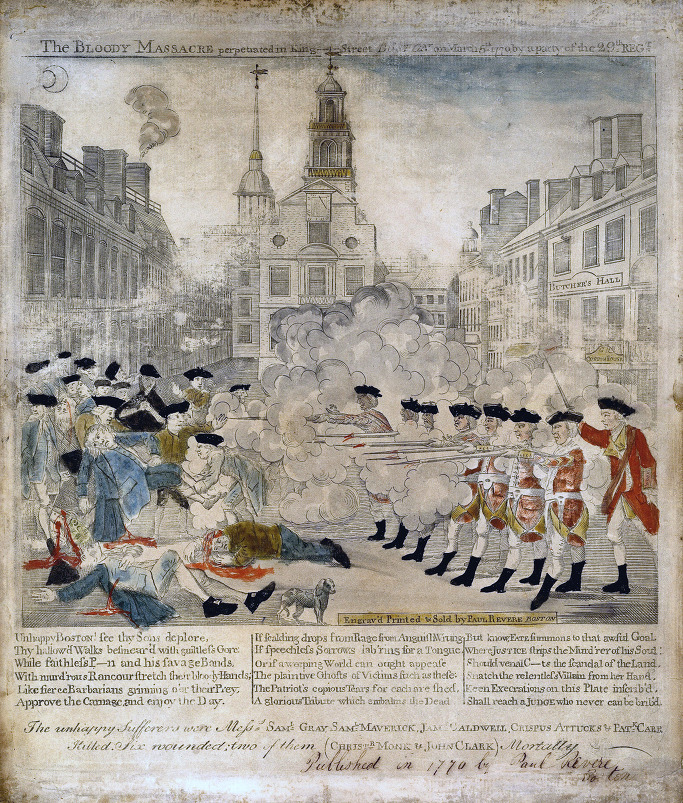
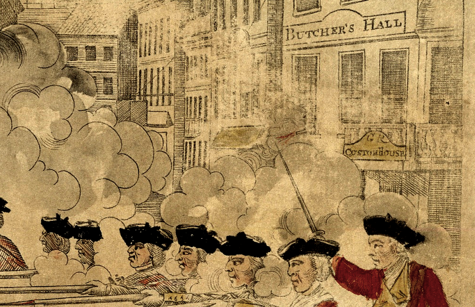
(미국 독립 전쟁의 시발점이 된 1770년 보스턴 학살 사건을 묘사한 판화 중 한 장면입니다. 북미 식민지 주민들에게 조준 사격을 하고 있는 영국 레드코트들의 등 뒤로 'Custom House' 즉 세관 사무소라고 씌인 간판이 보입니다. 얼마나 세관이 미웠으면 꼭 저기에 저 간판을 그려 넣었을까요 ?)
덕분에 프랑스 국내에서 영국산 공산품은 씨가 말랐느냐고요 ? 이 또한 그렇지가 않았습니다. 총칼보다 강력한 것이 돈이라고, 당시 영국이나 프랑스 양국 모두에서 밀수가 대유행이었습니다. 이들은 자국 및 적국 해군 감시를 뚫고 영국산 면직물이나 프랑스산 비단, 설탕과 커피, 와인과 브랜디를 부지런히 실어날랐습니다. 게다가, 국가가 인정하는 밀수까지도 있었습니다. 이른바 면허장 제도 (License System)이라고 해서, 법령으로는 적국인 프랑스 또는 영국과는 무역하지 말라고 해놓고, 몇몇 대상인들에게는 두둑한 세금을 바치는 조건으로 적국과의 무역을 허락하는 제도였습니다. 이런 제도는 아무리 적국이라고 해도 쌍방이 서로 상대방으로부터 필요한 물품들이 있기 마련이고, (가령 술고래 영국인들에게서 고급 프랑스 산 브랜디를 정말로 빼앗을 수는 없었지요) 또 어차피 밀수로 왔다갔다 하는 것을 뻔히 아는 처지에 이왕이면 세금이라도 받자는 의도도 있었기 때문입니다. 하지만 그보다는 더욱 많은 양의 상품이 독일 등을 통해서 프랑스와 영국 쌍방으로 부지런히 오갔습니다. 그 결과 영국과 프랑스의 전쟁 기간 중 북부 독일의 한자 동맹 도시들은 때아닌 무역 호황으로 번영을 누릴 수 있었습니다. 이 기간 중에는 아예 대놓고 상품과 선박의 국적만 세탁해주는 선박 거래소가 상업적으로 호황을 누리고 있을 정도였으니, 한자 동맹 도시들은 서류 몇 장만 떼어 주고 떼돈을 벌 수 있었던 것이지요.
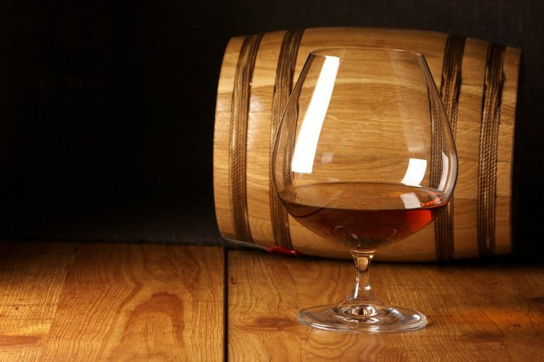
(뭐 영국 귀족 나으리들께서도 적국인 프랑스를 미워할 뿐, 프랑스 산 브랜디를 미워하신 것은 아니었습니다.)
전에도 썼습니다만, 나폴레옹이 궁극적으로 원했던 것은 유럽 정복 같은 것이 아니라, 유럽의 국가들이 하나의 연방체가 되어 같은 화폐와 같은 도량형을 쓰면서 평화로운 번영을 누리는 것이었습니다. 즉, 현재의 EU 같은 것을 벌써 200년 전에 구상했던 것이지요. 나폴레옹의 정치행정적인 영민함은 실로 대단하여, 그가 만든 제도 중 나폴레옹 법전이나 프랑스 중앙 은행, 리세 (lycee)라는 고등학교 제도 등 지금까지 그대로 살아남은 것들이 많습니다. 심지어 복잡한 역사와 사회 구조로 엉망진창이던 스위스의 정치 제도를 나폴레옹이 (비록 미국의 제도를 많이 본뜨기는 했지만) 산뜻하게 고쳐 놓은 것이 지금까지 거의 그대로 이어질 정도입니다. (이에 대해서는 이원복의 먼나라 이웃나라 스위스 편을 읽어보세요.) 아마 아우스테를리츠나 예나-아우어슈테트 전투 따위가 없다고 하더라도, 정치가 나폴레옹만으로도 나폴레옹이 위인으로 인정될 정도라고 생각될 정도입니다. 그런 그의 구상을 적극적으로 막는 것이 바로 영국이었습니다. 영국 입장에서는 분열된 유럽 대륙이 자국의 안보와 경제적 이익에 유리했으니까요. 지금도 영국은 유럽 대륙의 유로화 체제에 편입되기를 거부하고 있지요. 그런 영국을 꺾기 위해 나폴레옹이 구상했던 원대한 작전이 트라팔가 해전에서 산산조각이 난 뒤, 그는 영국 해군은 물론이고 그 근거지인 영국 본토를 친다는 계획도 영구히 접을 수 밖에 없었습니다. 해군이 없으면 정말 영국을 손봐줄 방법이 전혀 없었던 것일까요 ?
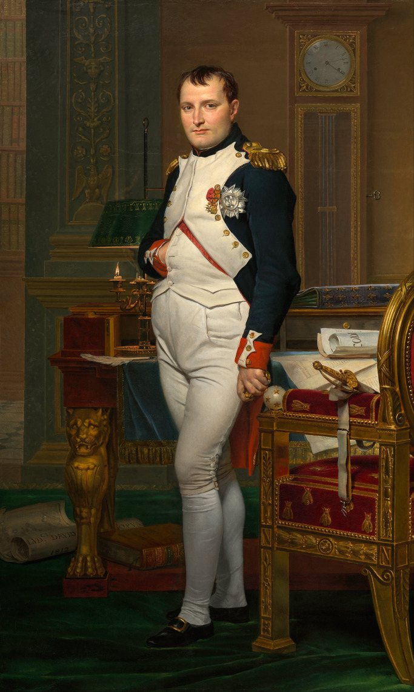
(나폴레옹의 신묘함은 전장보다 오히려 책상머리 위에서 더 빛이 났..을까요 ? 이 그림은 더 유명한 그림인 '튈르리 궁 서재에서의 나폴레옹'이라는 그림의 두번째 버전입니다. 더 유명한 첫번째 버전이나 이 버전이나 모두 다비드가 그린 것이지요. 확실히 첫번째 버전의 나폴레옹이 더 젊어 보이네요.)
보셨다시피, 나폴레옹의 등장 이전부터도 영국은 유럽 대륙과의 교역만 막아버리면 스스로 무너질 빚쟁이 나라에 불과하다는 생각은 프랑스 혁명 초기부터 이미 있던 생각이었습니다. 1794년에 이미 켈라르 (Cailard)라는 프랑스 외교관이 대륙 국가들이 연합하여 '스페인의 타구스 (Tagus) 강부터 독일 엘베 (Elbe) 강까지' 영국이 발을 붙이지 못하게 해야 한다고 주창한 바 있었습니다. 또 나폴레옹이 좋아했던 영국에 대한 경멸적 지칭인 '가게 주인들의 나라' (the isle of shopkeepers)라는 표현도 사실 1796년 국민 공회에서 바레르 (Bertrand Barère)라는 정치가가 썼던 표현이었고, 바로 이 바레르가 국민공회의 공안위원회에서 '외국 선박은 오직 그 자국의 상품만을 프랑스로 실어올 수 있다'는 법령인 항해 조례 (Navigation Act)를 제정하자고 주창하면서 이 조치로 영국을 망하게 할 수 있다고 주장하면서 썼던 표현이었습니다. 하지만 위에서 보신 것처럼, 중립국의 존재들 때문에라도 프랑스 국민의회나 총재 정부 시절에는 영국과의 경제 전쟁이 그다지 신통한 결과를 내놓지는 못했습니다. 그러나, 이제 나폴레옹이 경제 전쟁으로 눈을 돌리면서 이야기는 달라졌습니다. 나폴레옹의 천재성이 기존의 경제 전쟁에 새로운 전략을 가미했던 것일까요 ? 그렇지는 않았습니다. 그러나 1806년 예나-아우어슈테트 전투로 이제 북부 한자 동맹 도시들까지 모조로 프랑스의 세력권 안에 들어가면서, 과거와는 전혀 다른 스케일의 경제 전쟁이 가능해진 것입니다.
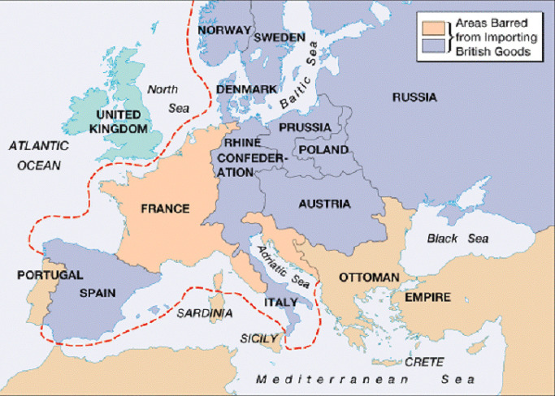
(이거슨 본격 '영국 왕따 전략' ! 오토만 제국도 프랑스의 동맹으로서 사실상 저 봉쇄령에 동참한 거나 다름없었습니다.)
나폴레옹은 예나-아우어슈테트에서 프로이센 군을 격멸시키고 베를린에 입성한 뒤인 1806년 11월 21일, 이른바 대륙 봉쇄령 (Continental System, Continental Blockade)를 발표합니다. 이 칙령에서 나폴레옹이 정한 것은 크게 4가지였습니다.
1. 영국 본토 (British Isles) 전체가 이제 봉쇄 상태에 들어가므로, 영국 본토와의 모든 거래나 통신은 금지된다.
2. 프랑스가 점거한 유럽 대륙에서 발견되는 모든 영국인과 그 재산은 정당한 나포의 대상이 된다.
3. 모든 영국산 제품, 즉 영국의 공장이나 그 식민지로부터 오는 모든 상품은 정당한 나포의 대상이 되고, 그 매각 대금의 절반은 영국 해군이 해상에서 나포한 선박에 대한 보상금으로 사용된다.
4. 영국 또는 그 식민지 항구로부터 직접 오거나 또는 그런 항구에 잠깐이라도 기항했던 모든 선박은 대륙 내의 모든 항구에 입항을 금지한다.
이 조치들은 전혀 새로운 것도 아니었고, 나폴레옹이 주도적으로 시작한 것도 아니었습니다. 오히려 영국이 먼저, 1806년 5월 16일, 프랑스 브레스트 (Brest) 항구부터 엘베 (Elbe) 강 사이의 전체 구간에 대해 봉쇄 조치에 들어간다고 선언했었지요. 제4차 동맹전쟁에 프로이센이 뛰어들면서부터 프로이센을 위해 엠스 (Ems, 네덜란드와 독일 사이의 강) 강부터 엘베 (Elbe) 강 사이의 해안은 같은 해 9월부터는 봉쇄에서 해지해 주기는 했지만요. 나폴레옹은 그렇게 실효성이 부족한 '서류상의 봉쇄' (paper blockade)의 부당성을 비난하며 역으로 영국 본토를 봉쇄한다고 '서류상 봉쇄'를 선언한 것입니다. 한마디로 영국의 불법 행위에 따른 정당한 보복 조치라는 뜻이지요. 저 4번째 조항도 영국의 강압적 조치에 대한 직접적인 보복 조항이었습니다. 당시 영국은 프랑스 전체를 '서류 상으로 봉쇄'하는 것으로도 모자라, 모든 중립국 선박들은 행선지가 어디건 간에, 무조건 영국의 항구에 들러 '항구세'를 지불해야 한다고 일방적으로 선언했었거든요. 이 조치는 프랑스는 물론 중립국들의 거센 반발을 불러왔는데, 나폴레옹은 그 조치에 대해 정면으로 대응되는 법령을 발동하여, '영국의 명령에 복종한다면 곧 프랑스의 적이다' 라는 것을 선언한 것이지요.
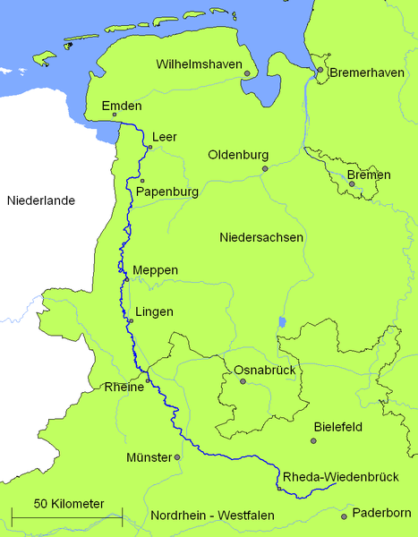
(엠스 Ems 강의 위치를 보여주는 지도입니다.)
실제로, 이제 나폴레옹은 엘베 강을 넘어 폴란드의 비스툴라 (Vistula) 강 하구까지 석권한 상태였으므로, 아드리아 해의 달마시아 (Dalmatia, 지금의 크로아티아) 해안부터 시작하여 발트 해의 거의 전부를 봉쇄할 실력을 갖춘 셈이었습니다. 과거 국민공회나 총재정부가 아무런 실력도 없이 공허하게 말로만 '영국놈들을 말려죽이겠다'라고 떠들던 것과는 차원이 다른 실력을 갖춘 상태에서 이 대륙 봉쇄령을 내린 것이었지요. 과연 나폴레옹의 대륙 봉쇄령은 실효를 거둘 수 있었을까요 ? 영국은 이를 어떻게 받아들였으며, 이로 인한 결과는 어떤 것이었을까요 ?
적국이 '나 너하고 교역 안 해 !' 라는 선언을 할 경우, 이쪽에서 취할 방향은 두가지 중 하나입니다. 적이 막는 것을 하는 것, 즉 어떻게든 그 대륙 봉쇄를 뚫고 교역을 하는 것이 한 방향이고, 다른 하나는 정반대로 '나도 너하고 교역 안 해 !'를 선언하는 방법이었습니다.
일단 영국이 대외적으로 취한 방법은 두번째 방법, 즉 맞불작전이었습니다. 영국은 당장 2개월 뒤인 1807년 1월 7일, 추밀원령 (Order in Council)을 통해 프랑스와 독일 해안을 모두 봉쇄한다는 명령을 내렸습니다. 이 조치는 1807년 내내 여러번의 추가 추밀원령에 의해 강화 및 확대 되었습니다. 나중에 영국 의회 발언 중 이런 표현이 나왔는데, 이 상황을 아주 잘 묘사한 것이었지요. "프랑스는 우리의 상업 활동에 대해 문을 닫았고, 우리는 그 문에 빗장을 걸었다."
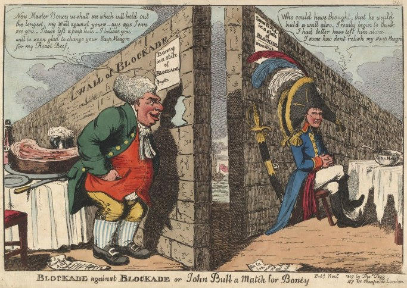
('존 불 (영국의 의인화 캐릭터) vs. 나폴레옹' 또는 '봉쇄 대 봉쇄'라는 제목의 풍자화입니다. 서로가 서로를 디스했던 이 양방향 봉쇄에서, 결국 손해를 보는 것은 해군력이 없던 나폴레옹이었지요. 존 불의 식탁에는 거대한 스테이크가 놓여 있는데 나폴레옹의 식탁에는 수프 한 그릇만 달랑 놓여 있는 것을 보십시요.)
어떻게 보면 영국의 조치는 불필요한 것처럼 보일 수 있습니다. 저쪽이 문을 닫고 열지 않겠다는데, 이쪽에서 억지로 그 문을 열기 위해 때려부수는 것이라면 몰라도, 굳이 이쪽에서도 문을 잠글 필요는 없는 것 아닌가요 ? 실은 차이가 있습니다. 영국의 추밀원령이 나오기 전까지, 프랑스 화물선들이 감히 항구 밖으로 나오지 못하는 동안 프랑스의 연안 무역을 대행하며 짭짤한 수익을 올리던 중립국들이 많았습니다. 가령 프랑스의 지중해를 통한 무역은 거의 덴마크 상선들이 수행하고 있었지요. 그런데 1807년의 추밀원령에 의해, 프랑스와 교역하는 선박들은 영국 해군의 적법한 나포 대상이 되어 버린 것입니다. 이 조치는 여태까지 프랑스와 거래하던 모든 중립국들에게 심각한 타격을 주었습니다.
나폴레옹의 대륙 봉쇄령이 처음으로 구체화되었던 1806년 11월의 베를린 칙령은 그래도 좀 이성적이고 부드러운 부분이 있었습니다. 가령, 비록 영국의 공산품을 싣고 어디론가 항해를 하던 중립국 선박이 재수없게도 프랑스 해군 전함과 딱 마주쳤다고 하더라도, 공해상에서는 영국의 상품을 싣고 간다는 것 만으로는 나포 대상이 아니라고 했던 것입니다. 또 그 배가 감히 프랑스 국내 항구나 프랑스가 점령한 이탈리아나 프로이센 등의 항구에 입항을 했다가, 세관 검사에서 그 적재 화물 중 영국제 모슬린 직물 30톤이 발견되었다고 하더라도, 그 영국제 상품만 압류가 될 뿐 그 화물선 전체가 압류되는 것은 아니었습니다.
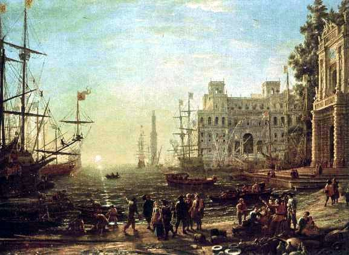
(항구에는 상선들이 와글와글 해야 돈과 물자가 돌고 사람들도 활기를 띠게 되는데, 세관 활동이 강화될 수록 그 활기는 떨어질 수 밖에 없겠지요.)
그러나 영국의 추밀원령은 훨씬 난폭하고 위압적이어서, 프랑스 및 그 위성국가에서 출항했거나 반대로 그쪽을 목적지로 삼고 항해 중인 중립국 선박이 공해상에서 영국 해군에게 걸리게 되면, 선박 전체를 나포할 수 있도록 했습니다. 어디서 출발했는지, 또 어디로 가는 것인지는 어떻게 파악하느냐고요 ? 먼저 중립국 선박을 정선하도록 명령한 뒤, 선적 서류 검사를 통해서 적발했습니다. 물론 이런 서류야 얼마든지 위조할 수 있었으므로, 중립국 선박들이 빠져 나갈 구멍은 많았습니다. 가령 당시 프랑스령 생 도밍그에서 생산되는 설탕과 커피는 (비록 이때는 반란 흑인 노예들이 전체 섬을 점거한 상태였습니다만) 프랑스 및 독일에서 매우 인기 있는 상품이었는데, 이들을 실어나른 것은 대부분 중립국인 미국 화물선들이었습니다. 이들은 먼저 생 도밍그에 가서 럼주와 총기, 식량과 공산품 등을 하역하고, 그 댓가로 받은 설탕과 커피를 싣고 곧장 유럽으로 가는 것이 아니라 일단 보스톤이나 뉴욕 등의 미국 항구로 입항한 뒤, 설탕과 커피를 실제로 하역했다가, 다시 그것을 선적한 뒤 유럽으로 출항했습니다. 이 과정에서 아예 선원들과 선장을 다른 인원으로 교체하는 일도 종종 있었습니다. 이는 모두 영국 해군이 적용하는 추밀원령을 피하기 위한 꼼수였지요.
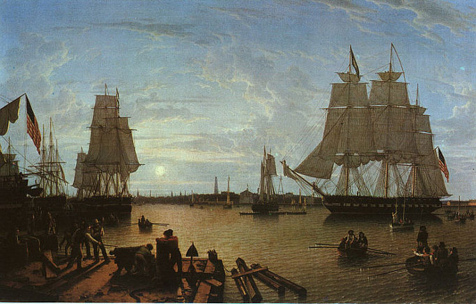
(19세기 초 미국 보스톤 항구의 모습입니다.)
그러다보니, 영국 추밀원령은 이런 맹점을 보완하고자 훨씬 더 강력한 추밀원령을 추가로 발표했습니다. 즉, 영국 해군이 중립국 선박들은 모두 영국 또는 영국 식민지 항구에 무조건 기항을 하도록 강제한 것입니다. 그렇게 함으로써 영국 항구에서 받은 기항 증명서가 없을 경우 근처의 영국 항구로 가도록 경고를 하고, 어정쩡한 곳에서 그런 기항 증명서도 없이 항해하고 있는 선박은 프랑스와 교역하는 선박으로 보고 나포를 하기 시작했습니다. 이렇게 영국 항구에 기항하도록 강제했다는 것은, 바꾸어 생각하면 그렇게 하기만 한다면 프랑스와 교역을 해도 나포하지 않겠다는 것을 뜻하기도 합니다. 그렇다면 영국 항구에 기항한다는 것의 의미가 무엇인지 보셔야 합니다. 일단 영국 항구에 기항을 하게 되면, 영국 세관원들이 승선하여 선적화물을 꼼꼼히 조사한 뒤, 프랑스나 그 식민지, 또는 프랑스의 동맹국산 물품이라고 판단되는 것에는 무거운 관세를 부과했습니다. 그 물건이 영국으로 반입되는 것이 아닌데도 말이지요. 가령 커피에는 100파운드에 해당하는 무게 당 28실링, 흑설탕에는 10실링, 백설탕에는 14실링을 부과했습니다. 이는 제품 가격의 20~30%에 해당하는 금액이었습니다. 대체 왜 이런 짓을 했을까요 ?
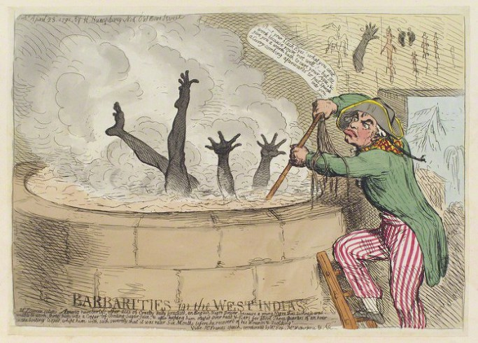
(당시 카리브 해의 설탕 생산은 잔혹한 흑인 노예 노동을 필수적으로 동반했으므로, 설탕 무역에 대해서는 많은 지식인들이 비난을 하곤 했습니다.)
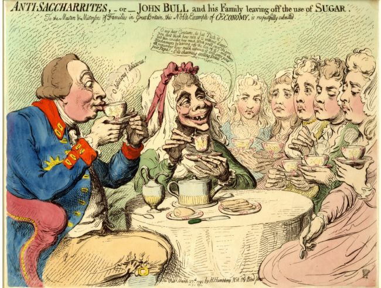
(현대에 참치 어획 때문에 돌고래가 죽는다고 참치 통조림 불매 운동이 일어나는 것과 유사하게, 차에 설탕을 넣는 것은 노예 학대를 허락하는 것과 동일하다고 설탕을 먹지 말자는 운동이 있기는 했답니다. 이 풍자화에서 영국 왕과 여왕이 공주들에게 '설탕 없이 차를 마시니 아주 맛이 좋구나' 라고 이야기하는데, 공주님들의 표정은 과히 좋지 못하네요.)
짐작하시는 바와 같습니다. 바로 프랑스 및 그 식민지산 상품의 가격을 관세만큼 높여버림으로써, 유럽 시장에서 영국 상품의 가격 경쟁력을 높이려는 조치였습니다. 당시 프랑스의 생 도밍그는 영국의 자메이카보다 훨씬 더 경쟁력 있는 설탕 및 커피 생산지였습니다. 자메이카 산 설탕이나 커피는 생산 단가가 생 도밍그보다 너무 높아서, 유럽 시장에서 경쟁력이 없었습니다. 그러나 이렇게 생 도밍그 산 설탕과 커피에 강제로 관세를 매기면, 필연적으로 유럽 시장에 도착했을 때의 상품 원가가 20~30%나 올라 버리므로, 이제 자메이카 산 상품이 경쟁력을 갖추게 되는 것이었지요. 그 속셈을 너무나 잘 보여주는 것이 그런 관세가 부과되지 않는 상품 목록이었습니다. 그런 면세 대상 품목은 주로 곡물류로서, 영국산 상품과 시장에서 경쟁할 일이 없는 상품들이었습니다. 결과적으로 보면, 당시 영국 해군이 프랑스 해안을 봉쇄했던 것은 프랑스의 전쟁 수행 능력을 떨어뜨리기 위해 전략 물자를 수입하지 못하도록 하려는 것이 아니었습니다. 오히려 그 반대로서, 프랑스 산 물품이 해외로 수출되는 것을 막는 것이 주목적이었습니다. 즉, 유럽, 미국이나 중남미 등의 식민지 시장에서 영국산 상품의 경쟁력을 높이는 것이 목적이었지요. 반대로 영국산 제품이 프랑스 국내로 반입되는 것은 영국으로서는 쌍수를 들고 환영하는 일이었습니다.
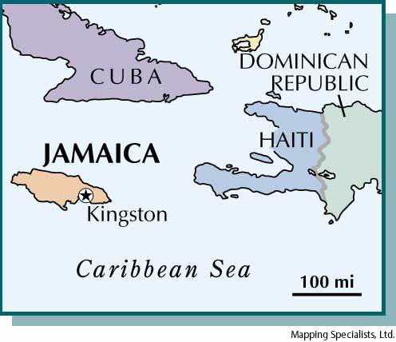
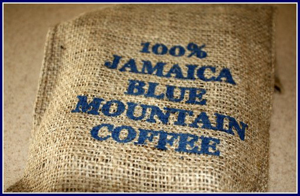
(영국이 스페인으로부터 빼앗은 식민지인 자메이카는 바로 인근의 생 도밍그, 즉 아이티와 비슷한 기후에 있었는데도 커피 및 사탕수수 농사에 있어서 생 도밍그의 상대가 되지 못했습니다. 그러나 자메이카 블루마운틴 커피는 유명한 브랜드이긴 합니다.)
사실 영국이 자국의 제품이 프랑스 측에 넘어가는 것을 원하지 않았다면 해상 봉쇄 같은 으리으리하고 비용이 많이 드는 조치보다 훨씬 더 간단한 방법이 있었습니다. 바로 수출 금지라는 행정 명령이지요. 하지만 정작 영국이 수출 금지 조치를 취했던 품목은 단 2가지였습니다. 바로 목화솜과 기나수 껍질 (cinchona bark)이었지요. 이 기나수 껍질이라는 나무껍질은 당시 흔히 예수회 나무껍질 (Jesuit's bark)로 불렸는데, 이는 남미에서만 나는 특산물이자 획기적인 말라리아 치료제로 쓰이던 의약품이었습니다. 당시 전쟁에서는 적탄에 맞아 죽는 병사들보다는 열병으로 죽는 병사들의 숫자가 훨씬 많았다는 점을 생각하면 기나수 껍질은 군수품 바로 그 자체였으니까 그럴 만도 했습니다. 그러나 목화솜을 금수품으로 지정한 것은 프랑스의 면직물 산업을 고사시키겠다는 노골적인 의도를 드러내는 것이었습니다. 이 두 품목을 금수품으로 지정한 것은 이렇게 함으로써 '영국과 교역하지 않으면 너희는 망한다'라는 의사를 분명히 전달하는 것이었습니다.
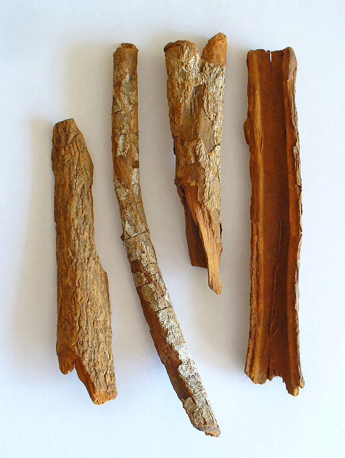
(이것이 바로 기나수 껍질입니다. 사람의 목숨을 좌우하는 귀중한 약재였기 때문에 무척이나 비쌌습니다.)
나폴레옹은 이러한 영국의 추밀원령에 대해 격노하여, 1807년 12월 밀라노 (Milan) 칙령을 발표합니다. 이 조치는 베를린 칙령에서 그래도 합리적이었던 부분을 없앤 것이라고 보시면 됩니다. 즉, 화물 중에서 영국제 상품이 발견되더라도 해당 상품만 압류 조치하던 것을 아예 선박 통째로 압류하도록 하고, 또 공해상에서라도 영국제 상품을 싣고 가던 선박은 나포 대상임을 선언했던 것입니다. 어차피 프랑스 해군은 바다에 나가지도 못하니까 그게 무슨 상관이냐고요 ? 프랑스 해군은 영국 해군이 무서워 바다로 나가지 못하는 경우가 많긴 했지만, 정말 전혀 못 나간 것은 아니었습니다. 그리고 프랑스 해군보다는, 노르망디 일대를 근거지로 하는 프랑스 사략선(privateer)들이 무척 활발한 활동을 벌이고 있었습니다. 이들은 무장이 변변치 않은 작은 쾌속선에 무장 선원들을 가득 싣고 영국 해협 일대에서 대기하고 있다가, 인도 등지에서 값진 화물을 싣고 돌아오는 화물선들을 나포하여, 영국의 통상로에 심각한 위협을 주고 있었습니다. 나폴레옹의 밀라노 칙령에 의해, 그 나포 대상이 훨씬 더 많아진 것입니다.
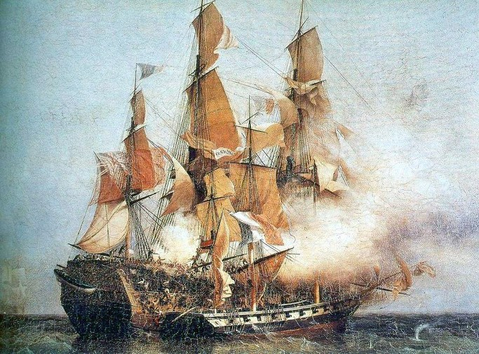
(동인도 회사 소속 켄트 Kent 호를 공격 중인 프랑스 사략선 콩피앙스 Confiance 호의 모습입니다. 이 사건은 1800년에 있었는데, 저 그림 속에서 작은 배가 콩피앙스입니다. 저 켄트 호는 무려 40문의 대포를 장착한 무장 상선이었고, 특히 화재가 발생한 다른 배의 승객들을 구출해서 태우고 있었기 때문에 무려 300명의 군인을 포함한 437명의 인원을 태우고 있었습니다. 그에 비해서 콩피앙스 호는 15문의 대포에 고작 150명의 선원을 태우고 있을 뿐이었지요. 그런데도 1시간 반의 전투 끝에 콩피앙스 호는 켄트 호를 나포하는데 성공합니다. 이때 나포 이후 1시간의 약탈이 허락되었는데 여성 승객들은 엄격하게 보호될 정도로, 프랑스 민간 사략선들은 해적과는 달리 신사도를 갖추고 있었습니다. 이 사건에 충격을 받은 영국 해군성은 이 콩피앙스 호의 선장 로베르 쉬르쿠 Robert Surcouf 에게 현상금을 걸기도 했습니다. 쉬르쿠는 1809년 현역에서 은퇴하기 전까지 무려 40 척을 나포하는 활약을 했는데, 이후에는 다른 사략선을 무장시켜 내보내는 선주로서 또 많은 돈을 벌어들였습니다. 영국 해군성의 기대와는 달리 그는 레종 도뇌르 훈장을 받는 등 명예롭게 살다가 1827년 노르망디에서 평온하게 세상을 떠났습니다.)
영국과 프랑스 양측의 이런 비이성적인 해양통상 정책으로 가장 큰 피해를 입은 것은 중립국 선박들이었습니다. 이들은 영국 측의 요구에 응하자니 프랑스 측에게 나포될 판이고, 그렇다고 프랑스 측의 명령에 따르자니 영국 해군에게 나포될 판이라서 어느 장단에 놀아야 할지 난감해졌습니다. 중립국 선박들은 영국 해군에 보여줄 선적 서류와 프랑스 세관에게 보여줄 서류를 각각 따로 준비함으로써 이런 상황을 회피했으나, 영국이 추밀원령을 내세워 무조건 영국 항구에 기항하여 관세를 낼 것을 강요하자 그것도 어려워졌습니다. 게다가, 나폴레옹이 프랑스 중심적인 보호주의 정책을 펴기 시작하면서 중립국들에게 상황은 점점 더 나빠졌습니다. 이렇게 영국과 프랑스 사이에서 피해를 보던 중립국들 중 가장 큰 피해를 보던 것은 다름 아닌 미국이었습니다. 당시 미국은 영국에 이어 세계 제2위의 상선단을 보유한 삼각 무역 대국이었는데, 영국 해군이 공해상에서라도 프랑스 및 그 동맹국과 교역하는 선박들을 나포하겠다고 나서는 바람에 큰 피해를 볼 수 밖에 없었습니다. 한 예로, 미국 매릴랜드 주의 한 거상은 무려 15척의 상선단을 거느리고 있었는데, 1807년 9월 이후 출항한 선박 중 겨우 3척만 무사히 귀환했을 뿐, 2척은 프랑스 및 스페인 측에 나포되었고, 1척은 함부르크에 기항했다가 프랑스에게 억류되었으며, 9척은 영국 측에 나포될 정도였습니다. 이러한 갈등은 결국 미국-영국 간의 1812년 전쟁으로 이어지게 됩니다만, 그건 나중에 이야기할 기회가 있을 겁니다.
저 위에서, 영국이 프랑스를 해양 봉쇄했던 이유가 프랑스를 말려죽이기 위해서라기 보다는 프랑스 산 제품과의 경쟁을 없애기 위함이라고 했었지요. 이렇게 적국에게 자국의 제품을 팔아 돈을 벌려고 안간힘을 쓰는 것은 프랑스 측도 마찬가지였습니다. 나폴레옹은 자신이 직접 '영국과의 모든 교역을 중단한다' 라고 선언했지만, 그건 주로 영국에게서 수입을 하지 않겠다는 것이었을 뿐, 수출은 계속 하고 싶었습니다. 왜 그랬을까요 ? 나폴레옹도 돈을 벌어 부자가 되고 싶어서였을까요 ? 물론 그것도 있었지요. 하지만 그가 영국 시장에 프랑스 제품을 팔려고 노력했던 주된 이유는 바로 영란은행에 저장된 금과 은, 즉 정금(specie) 때문이었습니다.
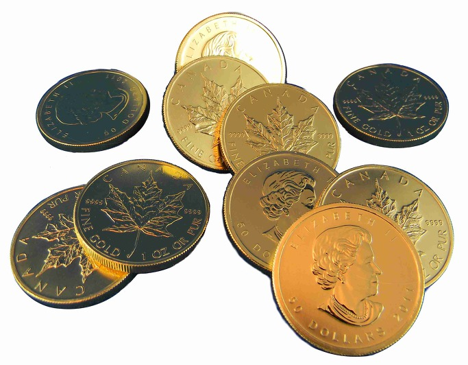
(돈의 노예가 되지 말라고 흔히들 말하지만 역사를 보면 인간의 목숨보다는 돈이 훨씬 더 소중하다고 모두들 인정하는 것 같습니다.)
현재의 미국이야 달러 화가 전세계에서 통용되는 기축 통화이므로, 글자 그대로 돈이 나무에서 열린다고 해도 무리가 아닙니다. 즉, 미국이 돈이 필요하면 조폐창에서 달러를 찍어내기만 하면 되는 것이지요. (물론 실제로는 그렇게 간단하지 않고, 미국 FRB가 그런 것을 허용하지도 않습니다.) 그에 비해서, 당시 영국 파운드 화는 그런 기축 통화의 지위를 가지지 못했고, 당시 전세계는 금 또는 은만을 진정한 화폐로 인정하는 분위기였습니다. 영국이 부자라는 것은 금광과 은광이 풍부했기 때문이 아니라 식민지 무역을 통해 들여오는 목화솜, 커피, 설탕, 염료, 향신료, 비단 등의 산물을 비싼 값에 유럽에 팔아 금과 은을 긁어 모을 수 있었기 때문이었지요. 하지만 아무리 영국이 부자라고 해도, 나폴레옹의 프랑스에 맞서 돈 먹는 하마인 그 엄청난 해군 전력을 유지하고 그것도 모자라 대불 동맹국들에게 막대한 군자금을 대주는 것은 힘에 부치는 일이었습니다. 그로 인해, 당시 영국의 부채 총액은 하늘 높은 줄 모르고 치솟아 오르고 있었습니다. 물론 영국은 영란은행의 존재로 인해 이런 국채 발행과 매각을 효율적으로 처리하고 있긴 했습니다만, 분명 전쟁은 영국 경제에 큰 부담을 주고 있었습니다. '무분별한 국채 발행은 결국 그 국가를 파멸시킨다'라고 경고한 아담 스미스의 국부론이 처음 출간된 1775년, 영국의 국채는 1억2천4백만 파운드에 달했습니다만, 그 책의 3번째 에디션이 인쇄될 때는 1783년 종료된 미국 독립전쟁 비용 때문에 거의 두배로 폭증한 상태였습니다. 영국이 제1차 대불동맹전쟁에 뛰어들던 1793년, 그렇게 영국 국채 누적액은 2억3천만 파운드였는데, 1802년 아매앵 조약으로 제2차 대불동맹전쟁을 끝낼 무렵에는 그 총액이 무려 5억7백만 파운드에 달했습니다. 이 금액이 어느 정도의 액수인지 느껴보시려면, 무려 100년도 지난 1914년 제1차 세계대전이 시작되기 직전 영국의 국채 총액이 5억8천7백만 파운드에 불과했다는 것을 보시면 됩니다. 이렇게 당시 영국의 재정 상태는 파탄 일보 직전이었습니다. 1797년 2월에는 금태환 정지 (suspension of convertibility), 즉 파운드 지폐를 은행에 들고 가도 그 액수에 해당하는 금으로 바꿔주지 않는 비상 조치를 취합니다. 이 조치는 향후 22년 간이나 지속되는데, 이는 파운드 화 지폐의 가치를 폭락시키는 결과를 낳았고, 그렇쟎아도 어려운 영국 재정을 더욱 어렵게 만들었습니다. (당시 사람들은 즉각 깨닫지는 못했지만, 역설적으로 파운드 화 폭락으로 인해 영국산 제품의 가격 경쟁력이 올라가고 해외로부터의 자금 유입이 활발해져서 결과적으로 영국의 경상수지가 급격히 좋아지는 결과를 낳기도 했습니다.)
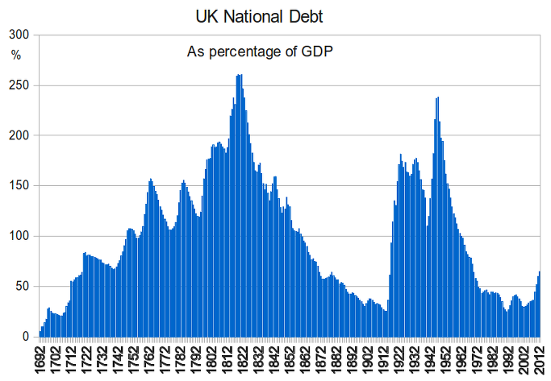
(17세기 말부터 현재까지 영국 GDP 대비 국채 비율입니다. 보시다시피 나폴레옹 전쟁 때가 역사상 최고 비율을 차지했었습니다. 그 다음은 제2차 세계대전 때였군요.)
아무튼 나폴레옹이 노리던 것은 바로 이것, 영국의 금과 은을 말려버림으로써 영국 경제를 파탄내는 것이었습니다. 그는 영국으로부터 금화와 은화를 더 반출해낼 수 있다면, 영란은행에 예치된 금화와 은화에 근거한 파운드 화의 가치는 폭락할 것이고 그렇게 영란은행이 무너지면 영국 재정과 함께 영국 해군도 무너질 것이라고 판단한 것이지요. 애초에 대륙 봉쇄령을 내린 것도, 영국으로 반입되는 금은의 꾸준한 흐름을 차단하여 영국을 경제적으로 몰락시키기 위함이었습니다. 즉, 유럽 대륙으로부터의 원재료나 공산품 공급을 차단함으로써 영국을 말려죽이겠다든가 하는 것은 아니었지요. 영국을 굴복시키기 위해서는 오히려 유럽 대륙의 원재료든 공업제품이든 영국에 적극적으로 수출하여 영국으로부터 금은을 탈탈 털어내야 했습니다. 그런 나폴레옹의 의도를 가장 잘 나타내주는 것이 그가 1810년 5월 그의 재무장관 고댕 (Gaudin)에게 보낸 편지입니다. 이 편지에서, 그는 "내 의도는 프랑스로부터의 식량 수출과 외국 금화의 수입을 장려하는 것이다" 라고 명시적으로 밝히고 있습니다. 또 1808년 5월, 그의 동생이자 네덜란드의 왕이던 루이 (Louis)에게 보낸 편지는 더 노골적이었습니다. 그는 이 편지에서 네덜란드의 진 (gin)을 영국에 밀수를 통해 수출하는 방법에 대해 지시하면서 다음과 같이 형님다운 어조로 강조했습니다. "거래 대금은 반드시 다른 상품이 아닌 금화나 은화로 받아야 한다. 절대 다른 상품으로 받으면 안된다. 알겠느냐 ?"
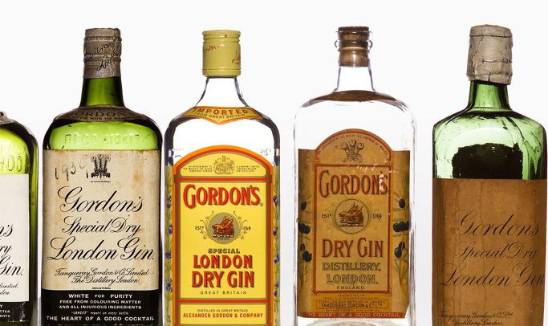
(지금은 진 하면 영국산을 떠올리지만, 원래 진은 네덜란드가 원산지입니다.)
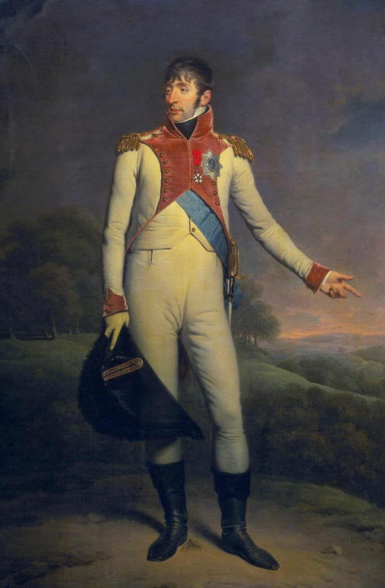
(나폴레옹에 의해 네덜란드 왕이 되었다가 이젠 진 술장수 노릇까지 하게 된 루이 보나파르트입니다. 그는 누구 덕분에 네덜란드 왕이 되었는지 기억하지 못하고 정말 진심으로 네덜란드 인들을 위한 네덜란드 왕 노릇을 열심히 했습니다. 덕분에 네덜란드 인들로부터는 크게 칭송을 받았으나 나폴레옹에게 찍혀 폐위되고 말았지요. 이 양반의 아들이 바로 나폴레옹 3세입니다.)
나폴레옹의 대륙 봉쇄령은 영국을 몰락시키기 위한 경제적 투쟁이 주된 것이었습니다만, 사실 나폴레옹은 거기에 다른 불순한 의도도 슬쩍 끼워 넣었습니다. 그는 겉으로는 유럽 전체가 하나의 체제 안에서 평화롭게 다 같이 번영하는 세상을 꿈꾼다고 했으나, 아무래도 팔은 안으로 굽는다고, 프랑스의 이익만을 지키는 보호장벽으로서 대륙 봉쇄령을 이용했습니다. 확실히 유럽 대륙 시장에서 영국 상품이 크게 줄어듬으로써, 프랑스 국내 상공업은 다소 활기를 띠게 된 것이 사실이었습니다. 그런 보호무역주의적인 속셈이 가장 노골적으로 드러난 것이 1807년 12월 밀라노 칙령 발표 직후 나폴레옹이 당시 해군상이던 드크레 (Decree)에게 지시한 조치들입니다. 그는 프랑스 항구에 입항한 러시아, 네덜란드 등 동맹국의 상선들을 억류하도록 했던 것입니다. 그 이유가 정말 가관인데, '영국 해군이 장악한 바다를 무사히 건너온 선박들은 동맹국 선박으로 서류를 세탁했을 뿐 사실상 영국 선박이거나, 그게 아니라 정말 동맹국 선박이라면 어차피 바다에 나가자마자 곧 영국 해군에게 나포될 것이 뻔하니 프랑스가 억류해야 한다'라는 것이었습니다. 문제는 이 부당한 억류의 근거라는 것이 어처구니 없는 것이긴 해도, 또 따지고 보면 말이 전혀 안되는 것은 아니라는 점이었지요. 정말 당시의 바다는 영국 해군의 것이었으니까요. 이 조치는 프랑스 국적 이외의 상선은 아예 프랑스에 출입하지 말라는 극단적인 보호무역주의 정책이었습니다.
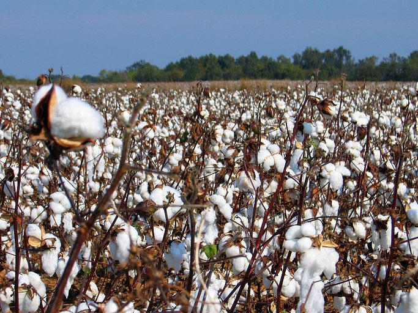
(목화밭에 열린 목화의 모습입니다. 당시 목화는 주로 인도와 아메리카 대륙에서 재배되었습니다.)
더욱 큰 문제는 영국 해군의 손이 닿지 않는 유럽 대륙 내부에서의 산업과 통상에서조차, 이런 노골적인 보호무역주의를 드러냈다는 것이었습니다. 가령 나폴레옹은 자신이 국왕으로 있는 이탈리아 왕국 (롬바르디아 등 북부 이탈리아)에 모든 면직물의 수입을 금지시켰습니다. 이유는 면직물은 사실상 모두 영국산이거나, 또는 영국으로부터 수입된 목화를 가공한 제품이라는 것이었지요. 그러나 우습게도, 프랑스 산 면직물은 제외라는 단서 조항을 슬그머니 끼워넣었습니다. 프랑스에서는 목화솜이 단 한줌도 나지 않았으므로, 결국 그것도 영국 식민지 또는 미국으로부터 수입한 것이 뻔했는데도 그런 눈가리고 아웅하는 식의 조항을 넣은 것이지요. 사실 나폴레옹은 비록 자신이 국왕으로 있었는데도 이탈리아 왕국의 번영에는 전혀 관심이 없었습니다. 그는 면직물 외에도 프랑스 산 상품들은 거의 무관세로 이탈리아 왕국으로 수입되도록 했고, 반대로 이탈리아 왕국에서 생산된 상품은 상당한 관세를 내야만 프랑스로 수출이 가능하도록 했습니다. 이런 정책은, 전통적으로 스위스 및 남부 독일 지방과 깊은 관계를 가지던 북부 이탈리아를 강제로 프랑스 경제권에 철저히 예속시키려는 계획에서 나온 것이었습니다.
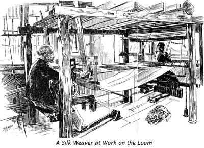
(당시 프랑스 리옹에서의 실크 직조장의 모습입니다. 한마디로 가내 수공업 수준이었지요.)
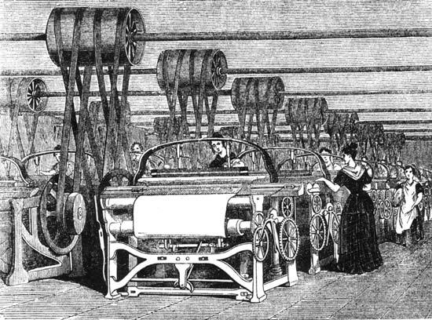
(산업 혁명에 들어서 증기기관을 이용한 직조기를 돌리던 영국 섬유 산업의 모습입니다.)
뿐만 아니라, 아예 더 나아가 십자군 전쟁 이후 이탈리아에 발달했던 비단 산업을 완전히 몰락시키는 조치를 취했습니다. 해외 시장에서 프랑스 산 비단과 경쟁하던 이탈리아의 비단 수출을 완전히 금지시킨 것입니다. 수출이 허락된 것은 프랑스의 견직물 (비단) 생산의 본산인 리옹 (Lyons)으로의 비단 원사 뿐이었습니다. 여기에 대해서는 마치 생색이라도 내듯이 원래 프랑스에 수출할 때 다른 종류의 상품들에게 부과되던 무거운 관세를 면제시켜 주었습니다. 비단 원사는 리옹에서 가공하여 다시 수출할 수 있는 원재료였기 때문이었습니다.
당시 이탈리아 왕국은 정식 국왕인 나폴레옹을 대신하여 그의 의붓아들 외젠 보아르네 (Eugene Beauharnais)가 부왕 (viceroy) 자격으로 다스리고 있었는데, 나폴레옹은 친히 그에게 보낸 편지에서 "La France avant tout" (프랑스가 모든 것에서 우선)이라고 강조하며 이탈리아의 경제를 훼손하여 프랑스의 이익을 도모하는 것을 망설이지 말라고 지시했습니다. 또 중부 독일의 작지만 부유한 공업 강국 베르크 (Berg) 공작령은 전통적으로 이탈리아에 공산품을 수출하여 부를 쌓았는데, 나폴레옹의 이런 조치로 인해 당장 이탈리아 시장을 잃고 몰락할 처지가 되었습니다. 마침 이 공작령의 주인이 나폴레옹의 매제인 뮈라 (Joachim Murat)였으므로 자신의 영지가 망하는 것을 자신의 재산이 줄어드는 것으로 받아들인 뮈라의 부탁으로 베르크 만큼은 이탈리아에 수출을 할 때 관세가 면제되는 특혜를 누리다가, 곧 제 정신을 차린 나폴레옹에 의해 그 특혜가 철폐되면서 프랑스 산 무관세 제품에게 가격 경쟁력을 잃고 결국 몰락하는 처지를 피하지 못했습니다.
(베르크 공작령의 수도는 지금의 뒤셀도르프입니다. 이 그림은 17세기 후반 뒤셀도르프의 St. Andreas 대성당의 모습을 그린 것입니다.)
나폴레옹이 전쟁 외에도 정치와 경제, 교육 등 다양한 분야에 항상 많은 신경을 쓰고 있었다는 것은 이미 여러번 이야기된 바 있었습니다. 그는 전쟁에서의 승리가 곧 프랑스의 경제적 이익으로 돌아올 수 있도록 항상 신경을 썼습니다. 단순히 패전국에게 전쟁 보상금을 요구했다는 이야기가 아닙니다. 가령 나폴레옹은 1809년 9월, 바그람 (Wagram) 전투에서 승리한 이후 오스트리아 쇤브룬 (Schonbrunn) 궁전에서 당시 프랑스 내무부 장관이던 푸셰 (Fouche)에게 보낸 편지에서 이렇게 말하며 투덜거렸습니다. "해당 부서에서 일을 제대로 했다면 짐이 비엔나로 밀고 들어온 전과를 활용하여 프랑스의 상인들과 제조업자들이 더 많은 직물과 도자기 등의 상품을 오스트리아에 판매하도록 독려했을 걸세. 이전에 그런 상품들은 오스트리아에게 엄청난 관세를, 가령 직물만 하더라도 무려 60%의 관세를 내고 있었네. 당연히 나의 승리를 이용하여 거의 무관세로 비엔나의 창고들이 터질 정도로 프랑스 상품을 판매해야 하네. 그런데 관련 부서에서는 생각도 없고 행동도 없군."
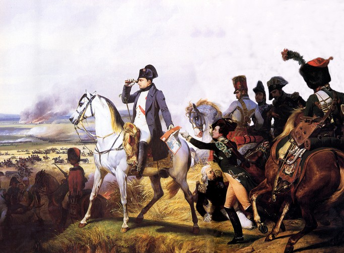
(바그람 전투에서의 나폴레옹입니다.)
나폴레옹의 경제 부문에 대한 이런 열정을 간접적으로 보여주는 사례가 또 있습니다. 모든 면에서 나폴레옹의 대등한 라이벌이 되고자 노력했던 베르나도트와 연관된 일화입니다. 그는 나중에 스웨덴의 왕세자가 된 이후, 스웨덴 궁정에서 통치에 대한 실무 학습을 시작하는데, 그때의 일화를 그와 함께 일했던 스웨덴 귀족인 트롤-바흐트마이스터 (Trolle-Wachtmeister)가 전해주는 바에 따르면, 베르나도트는 다른 것은 몰라도 경제 부분에 대해서만은 자신을 가르칠 사람이 없다며 대단한 자신감과 긍지를 보여주었습니다. 베르나도트는 장군 출신임에도 다음과 같이 말했다고 합니다. "스웨덴에 나보다 더 휼륭한 군인이 300명이 있다고 해도 뭐라고 반박하지 않겠네. 하지만 난 경제 부문에 대해서는 오랜 시간 특별한 수업을 거쳤으므로, 그 부문에 대해서만은 내가 스웨덴 내에서 최고 전문가라고 자신하네." 베르나도트가 항상 나폴레옹을 질투하고 그의 모든 것을 따라했던 것을 생각하면, 나폴레옹이 경제 쪽에 대해 얼마나 많은 신경을 썼는지 알 수 있습니다.
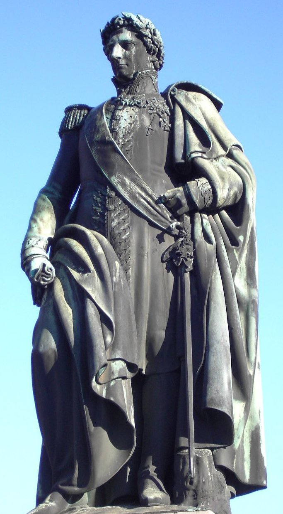
(스웨덴 내 최고 경제 전문가인 '경제왕' 베르나도트, 아니 칼 14세의 동상입니다.)
하지만 그런 '경제 황제' 나폴레옹의 대륙 봉쇄 정책은 결국 소기의 성과를 거둘 수 있었을까요 ? 다들 아시다시피, 별로 그렇지 않았습니다. 일단 나폴레옹이 착각하는 것이 있었는데, 영국이 부를 쌓을 수 있었던 것은 나폴레옹이 이해하는 것처럼 그냥 식민지의 상품을 유럽에 판매하는 단순 삼각 무역을 통한 것만이 아니었다는 것이었습니다. 물론 처음에는 그랬을 수도 있었습니다. 그리고 아마 나폴레옹의 낡은 경제학이 이해하는 바는 거기까지였겟지요. 나폴레옹이 브리소 (Brissot) 등 프랑스 지식인들의 저술을 읽고 형성한 견해에 따르면, 영국이 자랑하는 부라는 것은 결국 아무 실체가 없는 서류상의 신용 창출 구조, 즉 영란은행의 국채 제도에 의존하는 것으로서, 외부에서 충격을 줘서 금은 등 귀금속 공급을 끊기만 하면 스스로 무너질 것이라는 것이었습니다. 광대하고 기름진 농토를 가진 농업과 역사 깊은 명품 장인 제도에 근거한 탄탄한 상공업에 기반을 둔 프랑스와는 전혀 달리, 영국의 경제 구조는 허약한 것이라는 것이지요. 하지만 나폴레옹 전쟁이 시작되던 무렵, 이미 영국은 산업 혁명에 본격 진입한 상태였습니다. 즉 영국 산업은 막대한 부가가치를 만들어내고 있었고, 이는 유럽 대륙이 도저히 거부할 수 없는 달콤한 유혹이었습니다. 외제가 값싸고 질이 좋은데 그걸 무시하고 더 비싸고 품질이 떨어지는 국산품을 쓰라는 것은 예나 지금이나 결국 통하지 않는 정책이었습니다. 가령 카리브 해의 사탕수수 공급이 끊기면서 나폴레옹은 원래 프로이센에서 시작된 사탕무 (sugar beet)의 생산과 정제를 장려하여 유럽 대륙 내에서의 설탕 생산에 힘을 쓰기도 했지만, 그런 경쟁력 없는 산업은 결과적으로 도태될 수 밖에 없었고, 실제로 도태되었지요.
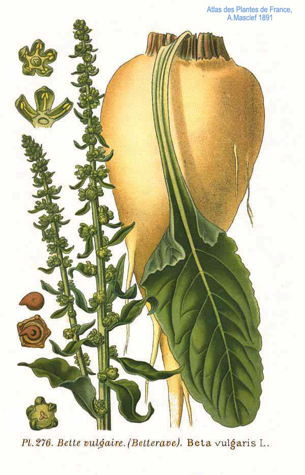
(사탕무에서 설탕을 뽑아보자는 시도는 예나-아우어슈테트 패전의 주범인 프로이센 빌헬름 3세의 지시로 본격화되었습니다. 나폴레옹이 그 뒤를 이어 대량 생산을 시작했고, 이에 힘입어 1813년에는 아예 카리브 산의 설탕 수입을 금지하기에 이르렀습니다.)
.
그리고 나폴레옹이 간과, 혹은 일부러 무시했던 것들도 나폴레옹의 대륙 봉쇄령을 갉아 먹었습니다. 바로 영국과 거래를 해야만 하는 다른 나라들의 형편이었지요. 가령 러시아 같은 경우, 귀족들의 주된 돈벌이는 '자신의 장원에서 생산된 곡물을 영국에 수출'하는 것이었습니다. 그런데 1807년 틸지트 (Tilsit) 조약 이후 러시아도 대륙 봉쇄령에 강제로 참여하게 되면서 러시아 귀족들이 당장 빈곤해지기 시작했습니다. 러시아 쌍두 독수리의 영광이 프랑스의 젊은 독수리에게 짓밟히는 것은 뭐 아무래도 좋았으나, 당장 자기 주머니가 가벼워지는 것은 참을 수 없는 일이었지요. 또 위에서 언급했 듯이 나폴레옹의 대륙 봉쇄령은 '영국에서 금은을 빼내오자'라는 목적 외에도 '동맹국들의 손해는 곧 프랑스의 이익'이라는 이기적인 프랑스의 경제적 욕심이 듬뿍 가미된 것이었기 때문에, 동맹국들의 성심어린 참여는 기대하기 어려웠습니다. 결과적으로 유럽 각국은 프랑스의 감시망을 피해 영국과 활발한 밀무역에 탐닉했지요.
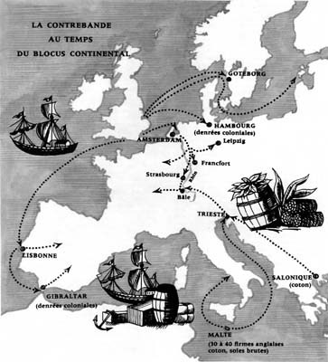
(대륙 봉쇄령 당시 영국산 제품이 대륙 내로 밀반입되던 루트를 표시한 지도입니다.)
심지어 프랑스 군의 군수품 중 일부도 영국산으로 채워질 정도였습니다. 가령 1812년 영국 의회에서 "프랑스 육군 병사들의 군복은 요크셔(Yorkshire) 산이며, 술트(Soult) 원수를 포함하여 그의 군단 병사들의 군복 장식품은 버밍엄(Birmingham) 산이다" 라는 발언이 나왔을 때 영국 의원들은 무척이나 득의양양한 모습이었습니다. 이런 영국산 공산품은 물론 프랑스 정부가 영국 공장에 주문을 해서 도입한 것은 아니었습니다. 영국이 중립국에 수출한 상품이 몇 번의 생산지 세탁을 거쳐 결국 프랑스 국내로 반입된 것이지요. 프랑스 육군의 구매부에서는 이런 상품이 사실상 영국제라는 것을 과연 몰랐을까요 ? 그럴 리가 없지요. 그러나 구매부에서야 구매해야 할 물품은 있는데 예산은 제한되어 있으니, 그 중 가장 질 좋고도 저렴한 제품을 택할 수 밖에 없었을 것입니다. 그리고 당시의 주력 산업이었던 섬유산업에 있어 가장 앞선 경쟁력을 갖춘 것은 바로 영국이었으니, 그런 기준으로 선택되는 물품은 다 영국산일 수 밖에 없던 것입니다.
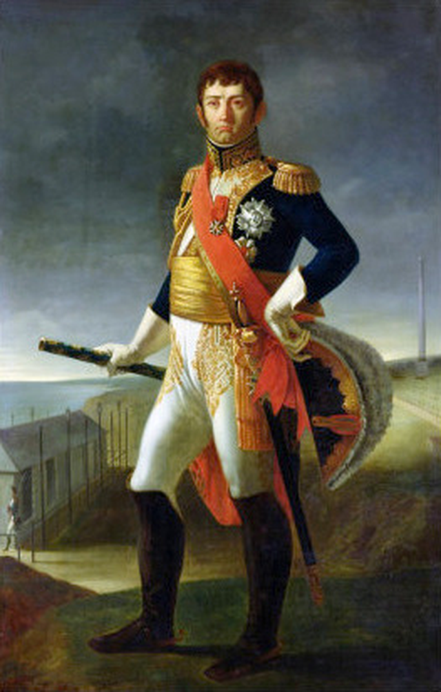
(잔뜩 폼을 재며 포즈를 취한 술트 원수입니다. 저 군복이며 장식품이 영국산이었다는군요 ?)
사정이 그러했기 때문에, 비록 영국의 국채는 나폴레옹의 기대처럼 계속 불어나 1815년 워털루 전투 즈음에는 영국 전체 GDP의 2배에 달하기도 했습니다만, 영국 국채에 대한 신용은 끝내 무너지지 않았습니다. 비록 영국에게는 프랑스처럼 광대한 기름진 농토와 명품 장인 제도는 없었을지라도, 산업 혁명 덕택에 웅장한 공업 능력을 보유하게 된 것이 영국 경제의 근간이 되어 준 덕분이었지요. 이렇게 생각했던 것보다 엄청난 괴물이었던 영국 산업계에게 전쟁을 선포한 나폴레옹은 확실히 이길 수 없는 적수에게 덤벼든 셈이었습니다. 그리고 그 댓가는 1812년 러시아의 진흙구덩이 속에서 처절하게 치르게 됩니다.
---------------------------------
Source : The Continental System - An Economic Interpretation by Eli Heckscher
http://www.econlib.org/library/YPDBooks/Heckscher/hksrCS.html